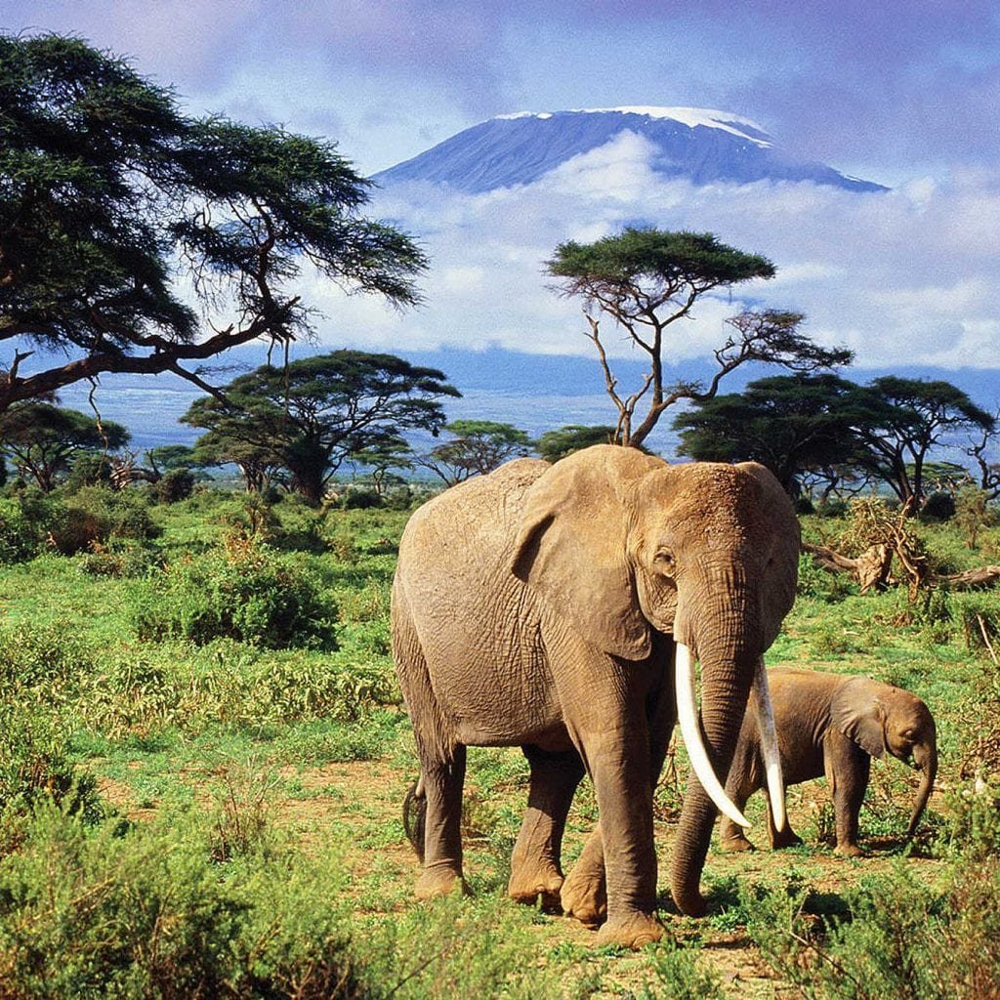

The African elephant is the largest land animal on Earth. Known for its large ears and tusks, these majestic creatures are found throughout sub-Saharan Africa. They are known for their intelligence, complex social structures, and strong family bonds.
Interesting Facts:
- African elephants can live up to 70 years in the wild.
- They use their trunks for drinking, feeding, and social interactions.
- Their ears help them regulate body temperature in the hot African climate.
- A single elephant can eat up to 300 pounds of food in a single day!
- Elephants are excellent swimmers and can use their trunks as snorkels in deep water.
Habitat:
African elephants are commonly found in diverse habitats such as savannas, forests, and deserts. They need vast amounts of land to roam and find enough food and water to survive. Elephants play a key role in maintaining the ecosystems they inhabit, helping to shape the environment and support biodiversity.
Read More on WikipediaBehavior:
These elephants live in matriarchal herds led by the oldest female. They have complex social structures and communicate with each other through a variety of vocalizations and body language. Elephants are known for their strong family bonds and collective care of the young.
Conservation Efforts
African elephants are currently listed as vulnerable due to habitat loss and poaching for their ivory tusks. Numerous organizations are working to protect these majestic creatures and their habitats.